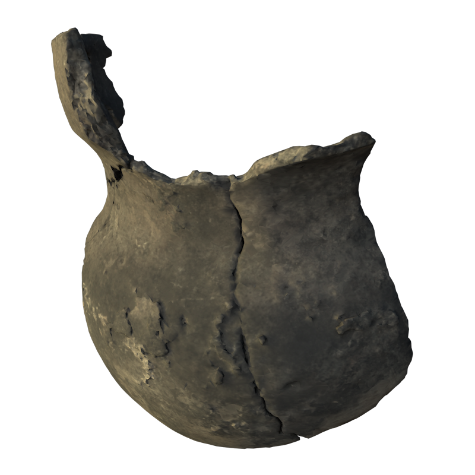
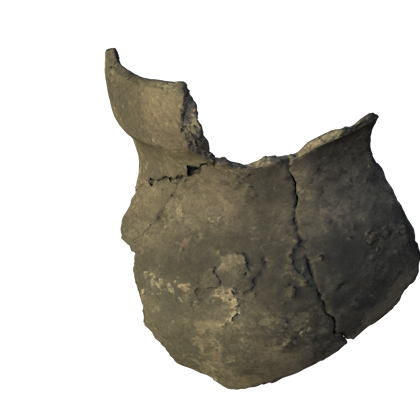

Logo

Ceramic Pot AR model
Ceramic Pot Introduction
Ceramic Pot
12.05cm

Period ca: 1500 AD
Material: Ceramic
Ceramic Pot Origin Story
Ceramic Pot
This reconstructed section of the upper half of a pot shows features shared by many of the Lawson site vessels. Its body is round and globular, while the neck is short and curved below a rim that has been thickened, creating a kind of collar to the top of the pot.
Ceramic Pot Featured Content: Design
The Beauty of The Pot's Design

The decoration on the rim consists of sets of oblique-angled lines impressed into the clay. Each set of lines alternates their angle along the rim, creating a broader triangular motif. This form of pot and style of rim decoration is found across the Lawson site and on sites from across this region of Ontario that date around 1500 AD.